Consider the voltage drop across the diode is,  .
.
Consider the following circuit diagram:
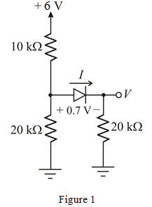
Consider the voltage drop across the diode is, .
Consider the following circuit diagram:
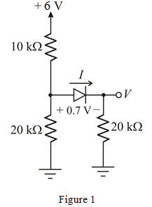
Consider the diode and  resistor is the load and determine the Thevenin’s voltage and the Thevenin’s resistor.
resistor is the load and determine the Thevenin’s voltage and the Thevenin’s resistor.
Replace the load with an open circuit as shown in Figure 2.
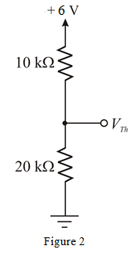
Calculate the Thevenin’s voltage by using the voltage division formula.
Therefore, the Thevenin’s voltage, is .
Redraw the circuit in Figure 1 to find the Thevenin’s resistance is shown in Figure 3
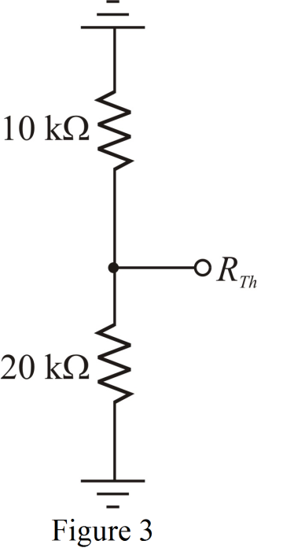
Calculate the Thevenin’s resistance.
Therefore, the Thevenin’s resistance, is .
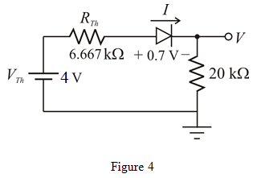
From Figure 4, the diode acts as a short circuit, as cathode of the diode is connected to the negative terminal of the source and anode is connected to the positive terminal of the source.
Redraw the circuit in Figure 4 by replacing the diode with the short circuit:
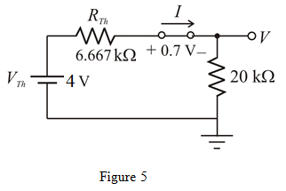
Apply Kirchhoff’s voltage law .
Therefore, the value of current I is .
Calculate the voltage using the Ohm’s law.
Therefore, the value of voltage V, is .
(b)
Consider the circuit diagram shown in Figure 6.
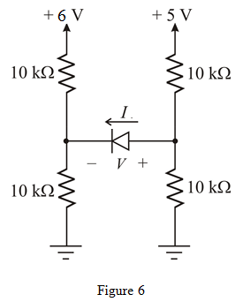
To determine Thevenin’s voltage and Thevenin’s resistor across the diode, replace the diode with the open circuit.
Redraw the circuit in Figure 6 to find the Thevenin’s voltage as shown in Figure 7.
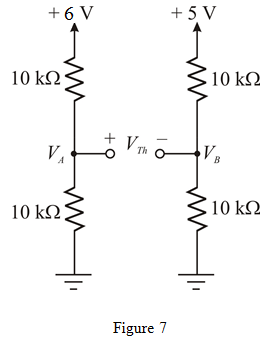
Calculate the voltage  using voltage division rule.
using voltage division rule.
Calculate the voltage  using voltage division rule.
using voltage division rule.
Calculate the Thevenin’s voltage.
Therefore, the Thevenin’s voltage is  .
.
Redraw the circuit in Figure 5 to find the Thevenin’s resistance by opening the diode and shorting the supply voltages.
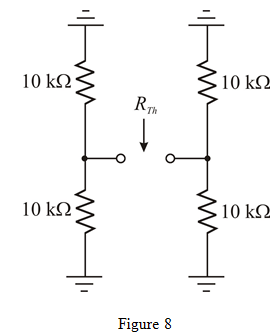
Calculate the Thevenin’s resistance.
Therefore, the Thevenin’s resistance is .
Draw the Thevenin’s equivalent circuit for Figure 6.
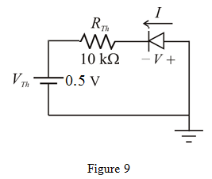
From Figure 9, the diode acting as an open circuit, as cathode of the diode is connected to the positive terminal of the source and anode is connected to the negative terminal of the source.
Redraw the circuit in Figure 9 by open the diode.
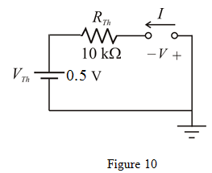
As the diode is acting as an open circuit, the current I , flowing through the diode is  . Hence, the current I, labeled in the Figure 6 is
. Hence, the current I, labeled in the Figure 6 is  .
.
Apply the Kirchhoff’s voltage law to the Figure 10.
Therefore, the value of voltage V is .